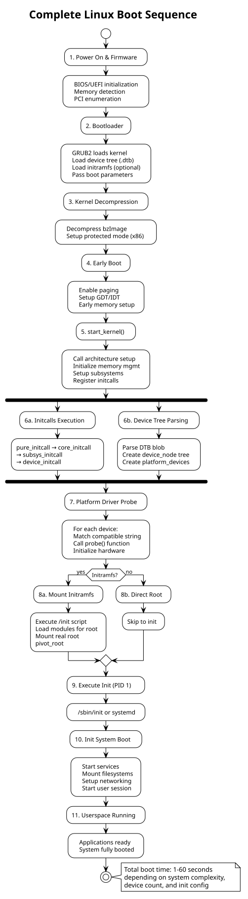

Linux Boot Sequence
Table of Contents
- 1. Boot Sequence Overview
- 2. Stage 1: Firmware & Bootloader
- 3. Stage 2: Kernel Decompression & Early Boot
- 4. Stage 3: Kernel Initialization (start_kernel)
- 5. Stage 4: Device Tree Parsing & Platform Device Discovery
- 6. Stage 5: Driver Probe & Hardware Initialization
- 7. Stage 6: Initramfs (Optional Early Userspace)
- 8. Stage 7: Init System Startup
- 9. Stage 8: Userspace Services & Desktop
- 10. Complete Boot Sequence Diagram
- 11. Detailed Boot Stages
- 11.1. Stage 0: Power-On Self-Test (POST)
- 11.2. Stage 1: Bootloader (GRUB2)
- 11.3. Stage 2: Decompression & Real Mode → Protected Mode
- 11.4. Stage 3: Kernel Memory Layout (x86_64)
- 11.5. Stage 4-5: Subsystem Initialization Order
- 11.6. Stage 6: Device Probe Sequence
- 11.7. Stage 7: Initramfs Exit
- 11.8. Stage 8-9: Init System (systemd) Boot
- 12. Boot Parameters (Kernel Cmdline)
- 13. Performance Tuning
- 14. See Also
Complete Linux boot sequence from bootloader through userspace, covering all stages, initialization sequence, and driver loading.
1. Boot Sequence Overview
Linux boot is a multi-stage process that transitions from firmware → bootloader → kernel → init system → userspace applications.
Key stages:
- Firmware/BIOS — Hardware initialization, bootloader selection
- Bootloader — Load kernel image and device tree
- Kernel Decompression — Extract and decompress vmlinuz
- Early Boot — Setup arch-specific hardware, memory, interrupts
- Kernel Initialization — Initialize subsystems (VFS, scheduler, etc.)
- Driver Probe — Match and initialize hardware devices
- Initramfs — Optional early userspace
- Init System — Start PID 1 (systemd, OpenRC, etc.)
- Userspace — System services and user applications
2. Stage 1: Firmware & Bootloader
2.1. Power On & Firmware
Boot flow:
- CPU executes reset vector (architecture-specific memory address)
- BIOS/UEFI initializes:
- CPU (enable caches, set MMU)
- Chipset configuration
- Memory detection
- PCI device enumeration
- Console (serial/video)
- Firmware searches for bootable device (disk MBR, UEFI ESP, network)
- Loads bootloader into memory
2.2. Bootloader Execution
Common bootloaders: GRUB2, U-Boot, LILO, Coreboot
GRUB2 boot sequence:
// Stage 1: MBR boot code (512 bytes)
// - Locate stage 1.5 or stage 2
// - Load via BIOS disk reads
// Stage 1.5: Load filesystem drivers
// - Read /boot/grub/ directory
// Stage 2: Full GRUB environment
// - Parse grub.cfg
// - Present menu (or auto-boot)
// - Load kernel: linux /vmlinuz root=/dev/sda1
// - Load initramfs: initrd /initrd.img
// - Load device tree (ARM): devicetree /dtb.dtb
// - Pass boot parameters to kernel
Boot parameters:
- `root=/dev/sda1` — root filesystem device
- `ro` — mount root read-only initially
- `console=ttyS0,115200` — console output
- `init=/bin/sh` — override init process
- `loglevel=7` — kernel log verbosity
- `quiet` — suppress boot messages
3. Stage 2: Kernel Decompression & Early Boot
3.1. Kernel Image Format
Modern kernels are compressed (zImage or bzImage on x86):
Linux kernel image layout:
┌─────────────────────────────┐
│ Boot sector (512 bytes) │ ← Bootloader entry point
│ Kernel setup (> 4KB) │ ← Parameter setup
│ Compressed kernel (vmlinuz) │ ← gzip/bzip2/xz compressed
│ Decompressor code │ ← Minimal decompressor
└─────────────────────────────┘
Bootloader:
1. Loads boot sector
2. Calls entry point with parameters
3. Kernel decompressor runs (16-bit, real mode on x86)
4. Decompresses bzImage → uncompressed vmlinux
5. Jumps to kernel start_kernel()
3.2. Early Boot (Head Code)
Architecture-specific initialization (usually in assembly):
// arch/x86/kernel/head.S (simplified)
.globl startup_32
startup_32:
// 1. Enable protected mode
movl %eax, %cr0
ljmp $__BOOT_CS, $1f // Jump to 32-bit code
1: // 2. Setup GDT (Global Descriptor Table)
lgdt gdt_descr
// 3. Setup IDT (Interrupt Descriptor Table - placeholder)
// 4. Setup page tables (identity mapping early on)
movl %cr3, %eax
// 5. Enable paging
movl %eax, %cr0
movl %eax, %cr4
// 6. Jump to kernel_start (C code)
jmp kernel_start
// All cpus reach this point eventually
4. Stage 3: Kernel Initialization (start_kernel)
4.1. Main Kernel Entry
All architecture-specific code converges at start_kernel() (kernel/main.c):
#+begin_src c // kernel/main.c asmlinkage __visible void __init start_kernel(void) { char *command_line;
/ 1. Setup CPU & memory subsystem setup_arch(&command_line); / Arch-specific setup mm_init(); / Memory management setup_interrupts(); / IDT, IRQ routing
/ 2. Parse boot parameters parse_early_param(); / Early cmdline parsing setup_log_buf(); // Kernel log buffer
/ 3. Initialize core subsystems boot_cpu_init(); / CPU (BSP bootstrap) page_address_init(); / Page allocator setup_per_cpu_areas(); / Per-CPU data
/ 4. Initialize memory zones mem_init(); / High memory, page cache kmem_cache_init(); // SLAB allocator
/ 5. Initialize core kernel systems setup_vfs(); / VFS, root filesystem inode_init(); / Inode cache dcache_init(); / Directory cache
/ 6. Initialize tasking/scheduling fork_init(); / Process creation sched_init(); / Scheduler init_IRQ(); / Interrupt handlers
/ 7. Initialize timekeeping time_init(); / Clocks, timers tick_init(); // Periodic tick
/ 8. Device & driver core driver_init(); / Device model usb_init(), pci_init(), etc. // Subsystem inits
/ 9. Mounted initial ramdisk or device tree / 10. Start init process kernel_init(); // Calls init program } #+end_str>
4.2. Initcalls: Ordered Subsystem Initialization
Kernel uses __initcall macros to register initialization functions at different levels:
// Called in order during boot
pure_initcall(x) // Level 0: Core
core_initcall(x) // Level 1: Core subsystems
postcore_initcall(x) // Level 2: Post-core
arch_initcall(x) // Level 3: Architecture-specific
subsys_initcall(x) // Level 4: Subsystems (buses, drivers)
fs_initcall(x) // Level 5: Filesystems
device_initcall(x) // Level 6: Devices (platform, pci, usb)
late_initcall(x) // Level 7: Late (final setup)
module_init(x) // Level 8: Loadable modules
// Example: PCI subsystem initialization
subsys_initcall(pci_driver_init);
// Example: Platform bus driver probe
device_initcall(platform_driver_register(&my_driver));
5. Stage 4: Device Tree Parsing & Platform Device Discovery
5.1. Device Tree Parsing
Device tree blob (DTB) passed by bootloader:
// kernel/of/fdt.c
void __init unflatten_device_tree(void)
{
// 1. Parse DTB passed by bootloader (in __dtb_start)
// 2. Create in-memory device tree
// 3. For each device node:
// Create device_node structure
struct device_node *node;
node->full_name = "/soc/gpio@1000";
node->properties = { "compatible", "vendor,gpio-controller", ... };
// 4. Add to global device tree
of_root = root_node;
}
// Later: arch-specific setup
void __init arch_of_populate_buses(void)
{
// Create platform_device for each compatible node
of_platform_populate(of_root, NULL, NULL, NULL);
}
Device tree nodes become platform devices:
// Device tree source
soc {
gpio@1000 {
compatible = "vendor,gpio-controller";
reg = <0x1000 0x100>;
};
led@2000 {
compatible = "vendor,led-controller";
reg = <0x2000 0x50>;
};
};
Becomes (after parsing):
#+begin_src platform_device("gpio.0") / compatible="vendor,gpio-controller" platform_device("led.0") / compatible="vendor,led-controller" #+end_str>
6. Stage 5: Driver Probe & Hardware Initialization
6.1. Device Matching & Probe
Driver core matches devices with drivers:
// drivers/base/dd.c
int driver_probe_device(struct device_driver *drv, struct device *dev)
{
// 1. Check if driver matches device
if (!drv->bus->match(dev, drv)) {
return -ENODEV;
}
// 2. Call driver probe
ret = drv->probe(dev); // my_gpio_probe()
if (ret == 0) {
// Probe succeeded
dev->driver = drv;
device_bind_driver(dev);
}
return ret;
}
Platform driver probe runs during device_initcall() level:
[ 0.000000] Linux version 6.1.0 (build)
[ 0.000000] Command line: root=/dev/sda1 ro
[ 0.000000] KERNEL supported cpus:
[ 0.000000] x86/fpu: Supporting XSAVE feature 0x001: 'x87 floating point registers'
...
[ 0.345678] [Firmware Bug]: ACPI: DSDT has incorrect length (1234 vs 5678)
[ 1.234567] gpio-controller 1000.gpio: GPIO chip registered
[ 1.234890] led-controller 2000.led: LED device registered
[ 1.567890] EXT4-fs (sda1): mounted filesystem
[ 1.891234] VFS: Mounted root (ext4 filesystem)
7. Stage 6: Initramfs (Optional Early Userspace)
7.1. Initramfs Purpose
Initramfs (initial RAM filesystem) provides early userspace utilities:
- Find and mount real root filesystem
- Setup LVM/RAID
- Load kernel modules needed for root
- Handle device discovery on live systems
7.2. Initramfs Boot Flow
#+begin_src bash
mount /initramfs
exec /init
#!/bin/sh
modprobe ata_piix # IDE driver modprobe ext4 # Filesystem
ROOTDEV=$(blkid -U UUID-FROM-CMDLINE)
mount $ROOTDEV /real_root
cd /real_root pivot_root . old_root # Chroot to new root exec /sbin/init # Start real init #+end_bash
8. Stage 7: Init System Startup
8.1. Transition to Init
Kernel calls init process (PID 1):
// kernel/init.c
static int kernel_init(void *unused)
{
// ... kernel setup ...
// Execute init program (from /proc/cmdline init= parameter)
if (!execute_command) {
// Default init programs (tried in order)
if (try_to_run_init_process("/sbin/init"))
try_to_run_init_process("/etc/init");
try_to_run_init_process("/bin/init");
try_to_run_init_process("/bin/sh");
}
panic("No init process"); // If all fail
}
Modern systems use systemd (PID 1):
[ 2.123456] systemd[1]: systemd 247.0 running in system mode. (+PAM +AUDIT +SELINUX +IMA +APPARMOR +SMACK +SYSVINIT +UTMP +LIBCRYPTSETUP +GCRYPT +GNUTLS +ACL +XZ +LZ4 +ZSTD +SECCOMP +BLKID +ELFUTILS +KMOD +IDN2 -IDNA +PCRE2)
[ 2.234567] systemd[1]: Detected architecture x86-64.
[ 2.345678] systemd[1]: Started udev Kernel Device Manager.
[ 2.456789] systemd[1]: Started Load Kernel Modules.
[ 2.567890] systemd[1]: Started Network Manager.
[ 2.678901] systemd[1]: Reached target Multi-User System.
9. Stage 8: Userspace Services & Desktop
Init system (systemd) starts services:
systemd boot flow:
1. Read /etc/fstab → mount filesystems
2. Start services marked [Install] WantedBy=multi-user.target
3. Common services:
- udev: device naming/hotplug
- networking: ifup, dhcp
- sshd: remote access
- user session manager
- X11/Wayland (if desktop)
4. Reaches target.wants (multi-user, graphical, etc.)
10. Complete Boot Sequence Diagram

11. Detailed Boot Stages
11.1. Stage 0: Power-On Self-Test (POST)
CPU starts at reset vector → firmware executes:
- Detect/test memory (memory size verification)
- Initialize chipset registers
- Enable/test caches
- Setup LAPIC (Local APIC) on x86
- Initialize console (serial/video output)
11.2. Stage 1: Bootloader (GRUB2)
1. MBR Boot Code (512 bytes)
- Minimal loader
- Searches for Stage 2
2. Stage 1.5 (optional)
- Filesystem-specific code
- Loads from /boot/
3. Stage 2
- Full GRUB environment
- Parses grub.cfg
- User menu or auto-boot
- Loads kernel + initramfs + DTB
- Sets up boot parameters
- Jumps to kernel entry point
Boot parameters passed to kernel:
| Parameter | Purpose |
|---|---|
root=/dev/sda1 |
Root filesystem device |
ro |
Mount root read-only |
console=ttyS0,115200 |
Serial console output |
quiet |
Suppress boot messages |
loglevel=7 |
Kernel verbosity |
init=/bin/systemd |
Init program path |
vga=0x318 |
Video mode (x86) |
noinitrd |
Skip initramfs |
11.3. Stage 2: Decompression & Real Mode → Protected Mode
// arch/x86/boot/compressed/head_64.S
startup_32:
// 16-bit → 32-bit transition
movl %ecx, %ebp // Save boot_params
jmp 1f
1:
// Setup 32-bit protected mode
lgdt gdt_descr // Load GDT
movl %cr0, %eax
orl $1, %eax // Set PE bit
movl %eax, %cr0 // Enable protected mode
ljmp $__BOOT_CS, $2f // Far jump
2:
// Now in 32-bit protected mode
// Setup page tables
// Setup paging (PAE)
// Call decompressor: decompress_kernel()
call decompress_kernel
// Jump to uncompressed kernel
ljmp $__KERNEL_CS, $0x100000
11.4. Stage 3: Kernel Memory Layout (x86_64)
After paging enabled:
Virtual Address Space (64-bit):
┌─────────────────────────────────────────────┐
│ ffff800000000000 - ffffffffffffffff (128TB) │ Kernel space
│ │
│ ffffffff80000000 - ffffffff9fffffff │ Identity mapping (kernel image)
│ ffffffff00000000 - ffffffff7fffffff │ Modules
│ ffffc90000000000 - ffffc900ffffffff │ Direct mapping (page cache)
│ │
└─────────────────────────────────────────────┘
│ 0000000000000000 - 00007fffffffffff (128TB) │ User space
│ (applications, libraries, heap, stack) │
└─────────────────────────────────────────────┘
11.5. Stage 4-5: Subsystem Initialization Order
Kernel initializes subsystems in order via initcalls:
- pure_initcall (early page zeroing, per-cpu areas)
- core_initcall (memory allocators: SLAB, page allocator)
- postcore_initcall (no_printk, tracers)
- arch_initcall (x86: ACPI, APIC setup)
- subsys_initcall (PCI, USB core, device model)
- fs_initcall (filesystem registration: ext4, btrfs, NFS)
- device_initcall (platform drivers, specific devices)
- late_initcall (final setup: console switch, etc.)
11.6. Stage 6: Device Probe Sequence
For each hardware device (from device tree or ACPI/PCI):
1. Device discovered (DTB, ACPI, PCI scan)
2. device_register(dev) called
3. Driver core searches registered drivers
4. compatible string match found
5. bus->probe(dev, driver) called
6. driver->probe(dev) executed
7. If successful:
- Resources allocated (devm_*)
- IRQs requested
- Device initialized
- sysfs entries created
- Subsystem registration (GPIO, network, block, etc.)
8. If failed:
- Resources freed (devm auto-cleanup)
- Device remains unbound
- May be probed later if driver loads
11.7. Stage 7: Initramfs Exit
On systems with initramfs:
#+begin_src bash
pivot_root /new-root /old-root # Make /new-root the new root exec chroot . /sbin/init # Execute real init #+end_bash
11.8. Stage 8-9: Init System (systemd) Boot
systemd boot sequence:
[*] Parse /etc/fstab
[*] Mount filesystems (marked "auto" or needed for boot)
[*] Start udev → /dev population, hotplug handling
[*] Start sysinit.target
[*] Execute OrderedAfter=sysinit dependencies
[*] Start basic.target
[*] Start multi-user.target
[*] Start services:
- network.target (networking)
- getty@tty1.service (login)
- sshd.service (remote access)
- user-session target (user services)
[OK] Reached multi-user.target
[*] If graphical.target:
- Start display-manager (X11/Wayland)
- Start user desktop session
12. Boot Parameters (Kernel Cmdline)
Common boot parameters:
# Storage
root=/dev/sda1 # Root device
rootflags=ro,relatime # Mount flags
rootfstype=ext4 # Filesystem type
# Console & Logging
console=ttyS0,115200 # Serial console
console=tty0 # Video console
loglevel=7 # Kernel log level (0-8)
quiet # Suppress messages
debug # Verbose logging
# Boot Behavior
init=/sbin/systemd # Init program
ro # Mount root read-only initially
rw # Mount root read-write
# Device/Driver
nvidia.modeset=1 # GPU driver
acpi=off # Disable ACPI
noapic # Disable APIC
nosmp # Disable SMP (multiprocessor)
nokaslr # Disable address space randomization
# Debugging
kgdb=ttyS0,115200 # Enable kgdb
kgdboc=ttyS0,115200 # kgdb console
crash_kexec=1 # Enable kexec for kdump
# Modules
modprobe.blacklist=nouveau # Blacklist module
View/modify boot parameters:
# View current boot parameters
cat /proc/cmdline
# View kernel boot log
dmesg | head -100
# View systemd boot times
systemd-analyze
systemd-analyze blame # Services taking time
13. Performance Tuning
Boot optimization techniques:
| Technique | Benefit | Trade-off |
|---|---|---|
quiet parameter |
Hide messages | Harder to debug |
| Initramfs optimization | Reduce init size | May need more modules |
| Parallel init (systemd) | Parallel service start | Complex dependencies |
| Module pre-loading | Faster device probe | Wasted memory if unused |
| Disable unused subsystems | Smaller kernel | Lost functionality |
| eBPF early load | Kernel code as modules | Debugging complexity |
Measure boot time:
# Total boot time
systemd-analyze
# Per-service boot time
systemd-analyze blame
# Boot graph
systemd-analyze plot > boot-sequence.svg
# Kernel + userspace breakdown
systemd-analyze time
# Monitor during boot
systemd-analyze log-level debug
14. See Also
- Kernel Module Fundamentals — module lifecycle during/after boot
- Device Tree (DTS) & Bindings — device discovery during boot
- Platform Drivers — platform driver probe during boot
- Debugging Techniques — debugging boot issues with kgdb